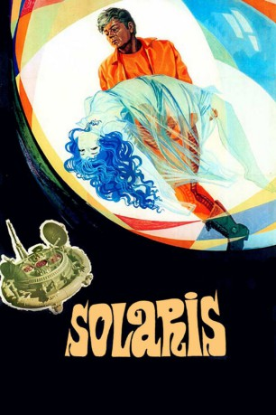

#5571 Solaris
 
 IMDB-Wertung: 8.1 / 10
IMDB-Wertung: 8.1 / 10  Metascore: 0
Metascore: 0 
Der Psychologe Kris Kelvin erhält den Auftrag, auf den Planeten Solaris zu fliegen. Bei seiner Ankunft sind dort nur noch zwei Mitglieder der ursprünglich 85 Mann starken Besatzung am Leben. Viel mehr als deren erschreckender psychischer Zustand verwirrt ihn jedoch das Erscheinen mehrerer Kinder und seiner verstorbenen Frau Hari auf der Station. Kelvin kommt zu dem Schluß, daß der Ozean auf Solaris für die Erscheinungen verantwortlich ist und das Vermögen besitzt, Träume und Figuren des Unterbewußten zu materialisieren.
Jahr: 1972
Dauer: 166 Minuten
FSK: 12
Land: Soviet-Union Studio: Icestorm EntertainmentTonspuren: DD1.0 - ,
Untertitel: Deutsch, Englisch,
Auflösung: 1080p (1920x808) Größe: 14336 MB
Genre: Drama, Sci-Fi, Mystery
Regisseur: Andrei Tarkovsky
Drehbuch: Saroo Brierley
Soundtrack:
Darsteller:
- Natalya Bondarchuk als Khari
- Donatas Banionis als Kris Kelvin, psikholog
- Jüri Järvet als Doktor Snaut, kibernetik
- Anatoliy Solonitsyn als Doktor Sartorius, astrobiolog
- Vladimir Zamanskiy als Kris Kelvin, psikholog , uncredited
- Vladislav Dvorzhetskiy als Anri Berton, pilot
- Nikolay Grinko als Nik Kelvin, otets Krisa Kelvina
- Olga Barnet als Mat Krisa Kelvina
- Vitalik Kerdimun als Syn Anri Bertona
- Olga Kizilova als Gostya doktora Gribaryana
- Tatyana Malykh als Plemyannitsa Krisa Kelvina
- Aleksandr Misharin als Shanakhan, predsedatel komissii Anri Bertona
- Bagrat Oganesyan als Professor Tarkhe
- Tamara Ogorodnikova als Anna, tetka Krisa Kelvina
- Sos Sargsyan als Doktor Gribaryan, fiziolog
- Yulian Semyonov als Predsedatel nauchnoy konferentsii
- V. Statsinskiy als Kris Kelvin v yunosti
- Valentina Sumenova als
- Georgiy Teykh als Professor Messendzher
- Raimundas Banionis als Kris Kelvin v otrochestve , uncredited
- Artyom Karapetyan als Frantsuzskiy uchenyy na konferentsii , uncredited
- Vladimir Tatosov als Doktor Snaut, kibernetik , uncredited
Datei: X:\1972\Solaris (1972, FSK12, 1920x808).mkv seit 17.02.2017
Festplatte: HD 1971-1979
 Es gibt insgesamt 26 Filme in der Gruppe '1972'
Es gibt insgesamt 26 Filme in der Gruppe '1972'